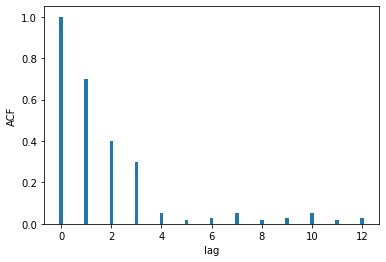
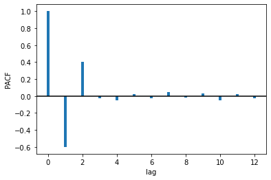
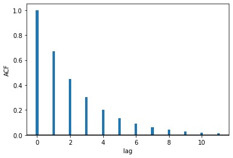
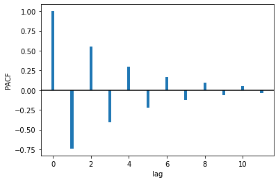

| Фамилия, Имя |
|
Вопросы 1--6 относятся к данной Марковской цепи. |
| 1. Какие из состояний марковской цепи являются проходными (transient)? |
|
1, 2, 7 1, 2, 3, 8 1, 2, 7, 8 1, 2, 7, 5 1, 2, 3, 5, 7, 8 1, 2, 8 1, 7, 8 |
| 2. Чему равны значения вероятностей перехода \(X\) и \(Y\)? |
|
\(X = 0.2, Y = 0.5\) \(X = 0.4, Y = 0.6\) \(X = 0.4, Y = 0.5\) \(X = 0.3, Y = 0.1\) \(X = 0.1, Y = 0.7\) \(X = 0, Y = 0.1\) \(X = 0.1, Y = 0\) |
| 3. Найдите вероятность \(P(X_{t+2} = 3 | X_{t} = 2)\). |
|
0 0.25 0.2 0.5 0.7 0.525 0.215 |
| 4. Если \(p^*(a)\) -- предельная вероятность для состояния \(X = a\), найдите \(p^*(8)\). |
|
0 0.25 0.3 0.5 1 0.05 0.2 |
| 5. Какие состояния цепи доступны (acessible) из состояния 2? |
|
все состояния 2, 3, 5 3, 5 2, 3, 5, 9 2, 3, 4, 5, 6, 9 2, 3, 7, 9 2, 3, 9 |
| 6. Какие из состояний цепи являются реккурентными? |
|
3, 4, 9 3, 4, 5, 8, 9 2, 5, 8, 6 3, 4, 5, 6, 9 в цепи нет реккурентных состояний 1, 4, 5, 6, 8, 9 все состояния реккурентные |
|
Вопросы 7--10 относятся к данной стохастической матрице. $$ \begin{pmatrix} 0 & 0.3 & x &0 &0.7\\ 0 & 0.1 & y & 0 &0.5\\ 0 & 0 & 0 & 1 & 0\\ 0 & 0 & 0 & 0 & 1\\ 0 & 0 & 1 & 0 & 0 \end{pmatrix} $$ |
| 7. Чему равны \(x\) и \(y\)? |
|
\(x = 0.2, y = 0.1\) \(x = 0, y = 0\) \(x = 0.3, y = 0.7\) \(x = 0, y = 0.4\) \(x = 0.3, y = 0\) \(x = 0.5, y = 1\) \(x = 0.1, y = 0.7\) |
| 8. Сколько периодических состояний в Марковской цепи, заданной данной матрицей переходов? |
|
0 1 2 3 4 5 6 |
| 9. Найдите вероятность \(P(X_{t+4} = 5 | X_{t} = 1)\). |
|
0.7 0.8215 0.815 0 0.35 0.3575 0.315 |
| 10. Найдите вероятность \(P(X_{t+6} = 4 | X_{t} = 2)\). |
|
0 0.9 0.5004 0.5404 0.24 0.2404 0.21 |
| 11. Какая из моделей задается уравнением \(X_t = \phi_1 X_{t-1} + \phi_2 X_{t-2} + \phi_3 X_{t-3} + W_t\)? |
|
AR(3) MA(3) AR(4) MA(1) ARMA(3, 1) MA(2) ARMA(2, 2) |
| 12. На графике отображена автокорреляционная функция некоего временного ряда. Какая из нижеперечисленных моделей лучше всего описывает данный временной ряд?  |
|
AR(3) MA(3) AR(4) MA(4) ARMA(3, 3) MA(2) ARMA(2, 2) |
| 13.На графике отображена частичная автокорреляционная функция некоего временного ряда. Какая из нижеперечисленных моделей лучше всего описывает данный временной ряд?  |
|
AR(3) MA(3) AR(4) MA(4) ARMA(3, 3) MA(2) ARMA(2, 2) |
| 14. Какое из уравнений описывает процесс ARMA(2, 3)? |
|
\(X_t = \phi_1 X_{t-2} + \theta_1 W_{t-3} \) \(X_t = \phi_1 X_{t-1} + W_t + \theta_1 W_{t-1} + \theta_2 W_{t-2} + \theta_3 W_{t-3}\) \(X_t = \phi_1 X_{t-1} + \phi_2 X_{t-2} + \phi_3 X_{t-3} + W_t\) \(X_t = \phi_1 X_{t-1} + \phi_2 X_{t-2} + \phi_3 X_{t-3} + W_t + \theta_1 W_{t-1} + \theta_2 W_{t-2}\) \(X_t = \phi_1 X_{t-1} + \phi_2 X_{t-2} + W_t + \theta_1 W_{t-1} + \theta_2 W_{t-2} + \theta_3 W_{t-3}\) \(X_t = \phi_1 X_{t-1} + W_t + \theta_1 W_{t-1}\) \(X_t = \phi_1 X_{t-1} + \phi_2 X_{t-2} + \theta_1 W_{t-1} + \theta_2 W_{t-2} + \theta_3 W_{t-3}\) |
| 15. На графиках отображены автокорреляционная функция и частичная автокорреляционная функция некоего временного ряда. Какая из нижеперечисленных моделей лучше всего описывает данный временной ряд?   |
|
AR(p) с неизвестным параметром p MA(q) с неизвестным параметром q ARMA(p, q) с неизвестными параметрами p, q ARMA(3, 3) AR(3) ARMA(4, 4) MA(4) |